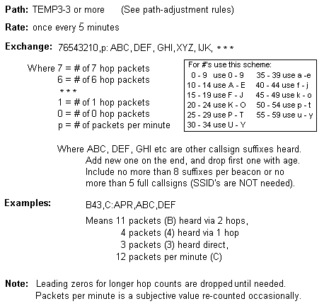
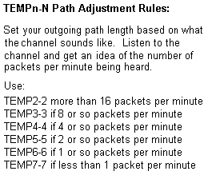

APRS Day Out - and the TEMPn-N Ad-Hoc Network
APRS Day Out - and the TEMPn-N Ad-Hoc Network
APRS Day Out - and the TEMPn-N Ad-Hoc Network
APRS Day Out - and the TEMPn-N Ad-Hoc Network
APRS Day Out! Join us everywhere during the 10-11 September 2011 APRS Day Out! This also correcsponds to the annual Septermber VHF QSO party when a lot of VHF'ers will be out and about from good portable locations. The APRS event will run from 1800 UTC Saturday to local midnight. That's 1400 EDT, etc since we want to remain focused rather than spread out over the full VHF contest weekend.

Exchange: The exchange will be the number of stations seen, the number of hops and the local packet rate as shown here. This lets others see how everyone else is doing, and more importantly the load on the Ad-Hoc network in real time at distant locations. Stations will use this data from surrounding areas to modify their transmit behavior to make sure the network does not become overloaded.
 PATH and Rate: As shown here, the receommended rate is one packet every 5 minutes. The Path may be as high as TEMP7-7, but this could blow up the interference level. To make this network self regulating, we receommend that the number of hops be made proportional to the local load on the network as shown in the table to the right.
Operating: The goal is to exchange the most information between the most stations while minimizing the load on the network. For this reasons APRS MESSAGES are discouraged! APRS messages are transmitted at 5 times the rate of beacons and require acks, thus generating 25 total packets when one will do. To QSL all the other stations you see, simply add them to your POSITION packet as shown to the right. Your position packet can QSL up to 8 other stations in a single transmission. Any more than 5 full calls, or 8 suffixes will not fit the small displays of some APRS HT's.
As you need to QSL more stations, just drop the first one and add the new one on the end of your position beacon. Avoid the temptation to TX often, it only collides with someone else in other areas and kills the life of their packet. Also, periodically count the number of packets heard in a minute and use this to set the number of Hops in your TEMPn-N path. Use your best judgment!
AD Hoc Network: There is no permanent APRS network on 147.585 MHz. Only the people who show up there for any given event. But APRS is PERFECT for establishing an AD-HOC network since every D700 and D710 APRS radio should already be configured to serve as an automatic digipeater and the D72 HT can be enabled from the front panel menu (UITRACE TEMP = ON).
 TEMPn-N
is the name for an AD-HOC APRS emergency network that can use
the THOUSANDS of D700/710 MOBILES FOR TEMPORARY DIGIpeaters. The objective
is for ALL D700/D710's (and any other packet station) to be permanently
enabled as a TEMPn-N digipeater. These radios do not
normally respond as digipeaters on the national APRS channel or anywhere else they are
used because TEMPn-N routing is not normally used.
But since they will respond at any time to TEMPn-N, they serve as a
silent reserve
emergency backup or ad-hoc digipeater system independent of existing infrastructure.
TEMPn-N
is the name for an AD-HOC APRS emergency network that can use
the THOUSANDS of D700/710 MOBILES FOR TEMPORARY DIGIpeaters. The objective
is for ALL D700/D710's (and any other packet station) to be permanently
enabled as a TEMPn-N digipeater. These radios do not
normally respond as digipeaters on the national APRS channel or anywhere else they are
used because TEMPn-N routing is not normally used.
But since they will respond at any time to TEMPn-N, they serve as a
silent reserve
emergency backup or ad-hoc digipeater system independent of existing infrastructure.
The Shadow TEMPn-N Network: We do NOT want mobile digis 99.99% of the time on the national APRS channel, but it is a shame not to have them available when needed. By only supporting the path of TEMPn-N, they are always out of sight, but always useable if needed. (including Field Day!). . This gives those remote D700/710 emergency digipeaters a standby-ready-to-use-anytime system on not only the national APRS channel, but any channel at any time... without any apriori action by the owner. For the D72 walkie talkie, the default TEMPn-N support is off to prevent the added congestion. But if the HT is strategically placed, then the operator can enable it from the front panel menu.
On the D710, TEMPn-N is enabled by factory default. This is with the UITRACE Menu set to TEMP and UITRACE set to ON. For the D700, the owner needs to set UITRACE TEMP using a PC over the serial port. Do this once for the life of the radio and then it is always available to support an ad-hoc TEMPn-N network wherever it is used. The radio will remember these settings:
 MOBILE TEMPn-N SUPPORT: So, if everyone follows the guidance on this page, then the
shadow TEMPn-N emergency network is always in place. To use this network, any USER simply
changes his normal path from WIDEn-N to TEMPn-N and if one of these radios is in range, he
will get out. Typically on the national channel, a user in this case
would use the path of TEMP1-1,WIDE2-2
so that after hitting the first nearyby TEMPn-N digipeaer, he then gets into the normal
network with WIDE2-2 hops to go. But for special events on another frequency, then
the path of TEMP3-3 or more might be used in an all TEMPn-N network.
The owners of the TEMPn-N mobiles do not have to do anything but have the radio ON to support
these links.
MOBILE TEMPn-N SUPPORT: So, if everyone follows the guidance on this page, then the
shadow TEMPn-N emergency network is always in place. To use this network, any USER simply
changes his normal path from WIDEn-N to TEMPn-N and if one of these radios is in range, he
will get out. Typically on the national channel, a user in this case
would use the path of TEMP1-1,WIDE2-2
so that after hitting the first nearyby TEMPn-N digipeaer, he then gets into the normal
network with WIDE2-2 hops to go. But for special events on another frequency, then
the path of TEMP3-3 or more might be used in an all TEMPn-N network.
The owners of the TEMPn-N mobiles do not have to do anything but have the radio ON to support
these links.
VHF CONTESTING: This ad-hoc TEMPn-N network can be used by all VHF multi-op stations and rovers, but the single-op stations and Rovers cannnot use the digipeating portion. The ARRL disallows digipeating by single-op rovers and stations. During an event, multiop stations simply switch their APRS mobile or station to the HamIM frequency of 147.585 and switch their outgoing PATH to TEMP7-7. Single-Op rovers should use the direct path of RFONLY. All stations will see all the other rovers and VHF stations in range. The TEMPn-N digipeating by high placed multi-op rovers or VHF stations will allow everyone on the channel to be seen. NOTE: If this gets too popular, we may have to cut that back to TEMP3-3.
Non Scoring Participants: Single Op stations and rovers that are not submitting scores may of course use the digipeaters and enable their own statinos for digipeating because they are not in competition. But they can make contacts with as many other statinos in the event.
Portable Digipeaters: Since every D700, or D710 (and any needed D72 HT) can be used as a temporary TEMPn-N digipeater, it is relatively simple to carry up a portable digipeater to any high location to form the ad-hoc network. The image to the right shows all that is needed for one of these sites. Long term power is usually the driving factor in the station design. We used these techniques exclusively during the annual Golden Packet Event.
See how we tried to apply this to Field Day 2005.
Lets get the word out. See you on the mountain top!
de WB4APR, Bob